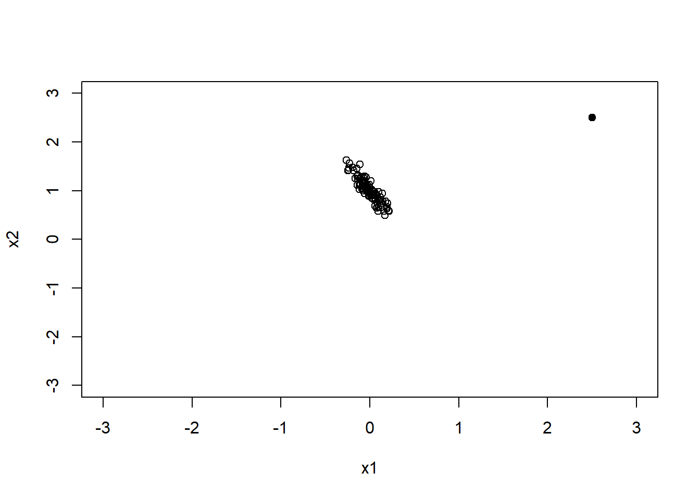

set.seed(123)
x1 <- rnorm(100, sd=0.1)
x2 <- rnorm(100, sd=0.1)
plot(x1, x2, xlim = c(-3, 3), ylim = c(-3, 3), xlab = "x1", ylab = "x2")
points(2.5, 2.5, pch = 19)
다중회귀분석에서는 설명변수를 많이 포함할수록 모형이 복잡해진다. 설명변수가 많아지면 훈련자료에서는 적합도가 좋아질 수 있지만, 불필요한 변수가 포함되면 회귀계수의 해석이 어려워지고 예측 성능이 오히려 나빠질 수 있다. 따라서 좋은 회귀모형은 단순히 많은 변수를 포함한 모형이 아니라, 분석 목적에 필요한 변수를 적절하게 포함한 모형이다.
이 장에서 특히 중요하게 생각해야 할 질문은 다음과 같다.
이 장에서는 설명변수들의 부분집합 중 반응변수와의 관계를 가장 잘 설명하는 부분집합을 선택하는 변수선택(variable selection)에 대해 설명함
불필요한 설명변수가 제거되면 간단하면서도 설명력이 높은 모형을 선택할 수 있음
설명변수들을 선별하는 단계에서 설명변수들 간의 관계에 대해 점검해 볼 필요가 있으므로 먼저 다중공선성 문제를 다룸
변수선택은 단순히 p-value가 유의한 변수만 남기는 절차가 아니다. 분석 목적이 설명이라면 연구 질문에 중요한 변수를 포함하고, 교란변수 또는 보정변수를 적절히 고려하는 것이 중요하다. 반면 분석 목적이 예측이라면 개별 회귀계수의 유의성보다 새로운 자료에서의 예측오차가 더 중요할 수 있다. 따라서 변수선택을 수행할 때는 먼저 분석 목적이 설명 중심인지, 예측 중심인지, 또는 간결한 모형 제시가 목적인지를 명확히 해야 한다.
설명변수 간에 연관성이 많으면 반응변수의 변화가 주요 설명변수보다 이 설명변수와 관련이 많은 다른 설명변수에 의존하게 되어 회귀모형 추정에 있어 문제가 발생함
그러므로 설명변수들의 다중공선성(multicollinearity) 등 설명변수들 간의 관계를 명확히 이해하는 것은 다중회귀분석에 있어 꼭 필요한 과정임
\[ c_1X_1 + c_2X_2 = c_0 \]
공선성이 있는 경우 회귀모형에서 두 변수를 모두 포함한다면 추정에 문제가 발생하게 되어 공선성 문제를 야기함
이상점이 공선성을 유도하는 경우
set.seed(123)
x1 <- rnorm(100, sd=0.1)
x2 <- rnorm(100, sd=0.1)
plot(x1, x2, xlim = c(-3, 3), ylim = c(-3, 3), xlab = "x1", ylab = "x2")
points(2.5, 2.5, pch = 19)
이상점이 공선성을 유도하는 경우로 이상점 때문에 두 변수간의 관련성이 높아짐
이상점이 공선성을 숨기는 경우
set.seed(123)
x1 <- rnorm(100, sd=0.1)
x2 <- 1-2*x1+rnorm(100, sd=0.1)
plot(x1, x2, xlim = c(-3, 3), ylim = c(-3, 3), xlab = "x1", ylab = "x2")
points(2.5, 2.5, pch = 19)
이상점을 제거하면 두 변수 간의 관련성이 높아짐
설명변수가 서로 독립이고 모형 설계시 고려되지 않은 다른 설명변수와 독립이라면 상관없지만 현실에서 설명변수가 완벽하게 독립인 경우는 거의 없음
설명변수 중 한 개가 다른 설명변수들의 선형조합으로 표현된다면 \(\mathbf{X'X}\)가 특이한(singular) 상황이 되며 다중공선성을 가지게 됨
이러한 경우 \((\mathbf{X'X})^{-1}\)를 구할 수 없어 회귀계수벡터 \(\beta\)에 대한 최소제곱추정량을 구하는 데 문제가 발생함
예) 아래와 같이 설명변수가 2개인 다중회귀모형
\[ Y=\beta_0 + \beta_1X_1 + \beta_2X_2 +\epsilon \]
\[ Var(\hat{\beta}_j)=\sigma^2(\frac{1}{1-r_{12}^2})(\frac{1}{S_{X_jX_j}}) \]
\(Var(\hat{\beta}_1)\)과 \(Var(\hat{\beta}_2)\)은 \(r_{12}^2=0\)일 때 최소값을 가지며 \(r_{12}^2\approx 1\)이면 \(\hat{\beta}_1\)과 \(\hat{\beta}_2\)의 분산은 크게 팽창되어(inflated) 회귀계수 추정값은 매우 불안정한 값이 됨
다중 공선성이 존재하는 경우 반응변수의 민감도는 설명변수의 위치에 따라 크게 좌우될 수 있으며 관측된 데이터에서 멀어지는 경우 예측값을 불안정하게 만드는 원인이 될 수 있음
다중공선성이 심하다고 해서 반드시 예측값 자체가 크게 나빠지는 것은 아니다. 서로 강하게 관련된 설명변수들이 함께 반응변수를 설명하면 적합값은 비교적 안정적일 수 있다. 그러나 개별 회귀계수를 분리해서 해석하기는 어려워진다. 즉, 다중공선성의 핵심 문제는 “모형 전체가 의미 없는가”라기보다 “각 설명변수의 독립적인 효과를 안정적으로 추정하고 해석할 수 있는가”에 있다.
설명변수들 간의 상관행렬에서 절대값이 큰 상관계수를 갖는 경우
\(j\)번째 설명변수를 반응변수 위치에 놓고 나머지 설명변수들로 회귀모형을 적합했을 때 결정계수 \(R_j^2\)이 1에 가까운 경우
\(\mathbf{X'X}\)의 고유값을 구한 후 크기 순서대로 늘어놓아 가장 큰 고유값을 \(\lambda_1\)이라 놓으면 \(\lambda_1>\lambda_2>\cdots>\lambda_{p+1}\)을 만족하며 가장 작은 고유값 \(\lambda_{p+1}\)에 대해 조건수(condition number)는 다음과 같음
\[ \kappa = \sqrt{\frac{\lambda_1}{\lambda_{p+1}}} \]
\[ Y=\beta_0 + \beta_1X_1 +\cdots +\beta_pX_p + \epsilon \]
\[ Var(\hat{\beta}_j)=\sigma^2(\frac{1}{1-R_{j}^2})(\frac{1}{S_{X_jX_j}}), \,\,\, j=1,\ldots, p \]
여기서 \(R_j^2\)은 \(j\)번째 설명변수를 반응변수 위치에 놓고 나머지 설명변수들로 회귀모형을 적합했을 때의 결정계수
만약 \(j\)번째 설명변수가 나머지 변수들의 어떤 부분집합에 거의 선형종속이면 \(R_j^2\)은 1에 가깝게 되고 \(\frac{1}{1-R_j^2}\)은 커지게 됨
\[ VIF_j = \frac{1}{1-R_j^2} \]
일반적으로 다중공선성의 존재를 조사하는 방법으로 분산팽창계수가 널리 쓰임
한 개 또는 그 이상의 \(VIF\) 값이 크면 다중공선성 문제가 있음을 나타냄
\(R_j^2\ge 0.6\)이상인 경우 즉, 분산팽창계수 \(VIF_j\ge 2.5\) 이상이면 다중공선성을 의심해 볼 수 있음
일반적으로 \(VIF_j \ge 10\)이면 다중공선성 문제가 있다고 함
VIF 기준은 분야와 분석 목적에 따라 다르게 적용될 수 있다. 예측이 주목적인 경우에는 VIF가 다소 크더라도 예측 성능이 충분히 좋다면 모형을 사용할 수 있다. 반면 특정 설명변수의 효과를 해석하는 것이 목적이라면 VIF가 크지 않은지 더 엄격하게 확인해야 한다. 특히 의학·보건학 연구에서 보정효과를 해석할 때는 회귀계수의 방향, 표준오차, 신뢰구간이 다중공선성에 의해 불안정해지지 않았는지 확인해야 한다.
다중공선성은 추정식과 예측값을 불안정하게 함
설명변수들 간의 상관관계로 인해 회귀계수에 대한 검정이 유의하지 않을 수 있으며 이러한 경우 추정식이 유의하지 않게 되며 따라서 예측값에 대해 신뢰할 수 없게 됨
또한 설명변수의 위치에 따라 예측값이 크게 좌우될 수 있으며 관측된 데이터에서 멀어지는 경우 예측값을 불안정하게 만드는 원인이 될 수 있음
상관성이 큰 설명변수를 제거한 후 분석
모든 설명변수를 포함시키고자 한다면 능형회귀(ridge regression) 등의 대안 모형을 모색
설명변수 간 다중공선성이 존재하는 경우 설명변수를 제거하여 모형을 개선하고 다중공선성을 줄일 수 있음
설명변수를 2개를 모두 포함한 완전모형
\[ Y=\beta_0+\beta_1X_1+\beta_2X_2+\epsilon \]
\[ Y=\beta_0+\beta_1X_1+\epsilon \]
\[ E(\hat{\beta}_1)=\beta_1, \,\,\, Var(\hat{\beta}_1)=\frac{\sigma^2}{1-r_{12}^2} \]
\[ E(\hat{\beta}_1)=\beta_1+r_{12}\beta_2, \,\,\, Var(\hat{\beta}_1)=\sigma^2 \]
\[ Var(\hat{\beta}_1)_{full}=\frac{\sigma^2}{1-r_{12}^2}\ge\sigma^2=Var(\hat{\beta}_1)_{reduce} \]
축소모형에서의 회귀계수 추정량의 분산이 완전모형보다 작음을 알 수 있으므로 공선성이 존재할 경우에는 축소모형을 선택하는 것이 좋음
\(p\)개의 설명변수가 있는 다중회귀모형에서 모형비교
\[ \mathbf{Y=X\beta+\epsilon} \]
\[ \mathbf{Y=X_1\beta_1+X_2\beta_2+\epsilon} \]
\[ \mathbf{Y=X_1\beta_1+\epsilon} \]
축소된 회귀모형은 완전모형에서 \(\beta_2=0\)일 경우 동일한 모형이 됨
축소된 모형에서의 \(\beta_1\)에 대한 추정량
\[ \hat{\beta}_1=\mathbf{(X_1'X_1)^{-1}X_1'Y} \]
두 모형 비교를 위한 통계적 가설
\(H_0\)하에서의 잔차제곱합 \(RSS_{H_0}\)는 자유도 \(df_{H_0}\)를 가지며, \(H_1\)하에서의 잔차제곱합 \(RSS_{H_1}\)는 자유도 \(df_{H_1}\)를 가짐
대립가설하에서 모수의 개수가 더 많으므로 \(df_{H_0}>df_{H_1}\)이 됨
검정통계량
\[ F=\frac{(RSS_{H_0}-RSS_{H_1})/(df_{H_0}-df_{H_1})}{RSS_{H_1}/df_{H_1}} \sim F_{df_{H_0}-df_{H_1},df_{H_1}} \]
완전모형과 축소모형을 F-검정으로 비교할 때는 두 모형이 중첩모형(nested model) 이어야 한다. 즉, 축소모형은 완전모형에서 일부 설명변수를 제거한 형태여야 한다. 예를 들어 y ~ x1 + x2 + x3와 y ~ x1 + x2는 중첩모형이므로 F-검정으로 비교할 수 있다. 하지만 y ~ x1 + x2와 y ~ x3 + x4처럼 서로 포함관계가 없는 모형은 일반적인 중첩모형 F-검정으로 직접 비교하기 어렵다.
F-검정에서 귀무가설이 기각되면 제거하려던 변수들이 반응변수 설명에 유의하게 기여한다고 볼 수 있다. 반대로 귀무가설이 기각되지 않으면 축소모형이 충분히 간단하면서도 자료를 설명하는 데 큰 손실이 없다고 해석할 수 있다.
\[ F\ge F_{df_{H_0}-df_{H_1},df_{H_1}} \,\,\, then \,\,\, reject \,\,\, H_0 \]
회귀모형에서 설명변수를 제거하여 다중공선성을 줄여 모형을 개선할 수 있음
특히 다중공선성을 발생시키는 설명변수를 제거하면 모수추정에 대한 정확도를 높일 수 있음
또 다른 측면에서 모수절약의 원칙을 적용하여 최소의 설명변수들로 반응변수와 관련성을 최대한 설명할 수 있는 모형을 만들기 위해 설명변수들을 선택하여 모형을 만들 수 있으며, 이를 변수선택(variable selection)이라 함
모수절약의 원칙(parsimony)은 가능한 한 단순한 모형을 선호한다는 원칙이다. 그러나 단순한 모형이 항상 좋은 모형이라는 의미는 아니다. 중요한 변수까지 제거하면 편향이 커질 수 있고, 반대로 불필요한 변수를 많이 포함하면 분산이 커지고 해석이 어려워질 수 있다. 따라서 변수선택은 편향과 분산 사이의 균형을 찾는 과정으로 이해할 수 있다.
유의한 설명변수를 삽입하거나 유의하지 않은 설명변수들을 제거함으로써 유의한 설명변수만으로 회귀모형을 설정하는 방법으로 단계별 변수선택 접근이 많이 쓰이고 있음
단계별 변수선택은 전진 선택(forward selection), 후진 제거(backward elimination)과 단계별 선택(stepwise selection) 과정을 반복하며 최적의 설명변수들의 부분집합을 찾는 방법
설명변수들 중 반응변수와 상관관계가 가장 크고 설명력이 유의한 설명변수를 먼저 선택
이미 선택된 설명변수를 제외한 나머지 설명변수를 하나씩 삽입하여 유의한 설명변수 선택
새로 선택된 설명변수가 먼저 선택되었다고 가정하고, 이미 삽입되어 있던 설명변수의 유의성에 대한 \(F\)-검정을 수행
단계별 변수선택방법으로 결정된 모형은 모형선택을 위한 다른 기준으로 점검해볼 때 최적모형이 아닐 수 있음
단계별 변수선택방법에서 설명변수들의 순서가 정해지는 방법은 데이터 기반 통계량에 의한 방법이며, 실질적인 관계를 가지는 변수가 제외될 수도 있음
R에서는 library(MASS)의 stepAIC()함수나 step() 함수를 이용해 단계별 변수선택을 할 수 있음
단계별 변수선택은 사용하기 쉽고 직관적이지만 몇 가지 한계가 있다. 첫째, 자료에 따라 선택되는 변수가 불안정할 수 있다. 둘째, 많은 후보변수 중 반복적으로 검정을 수행하기 때문에 p-value가 과도하게 낙관적으로 해석될 수 있다. 셋째, 선택된 최종모형의 회귀계수와 신뢰구간은 변수선택 과정의 불확실성을 충분히 반영하지 못한다. 따라서 단계별 선택 결과는 최종 결론이라기보다 후보모형을 탐색하는 도구로 사용하는 것이 바람직하다.
최적모형을 선택하기 위한 모형의 선택기준으로 다음의 측도들을 이용하여 적절한 모형을 선택할 수 있음
완전모형에 대한 결정계수 \(R^2\)은 0과 1 사이의 값을 가지며, 1에 가까운 값을 가질수록 모형의 설명력이 높음
결정계수는 모형에 중요하지 않은 독립변수가 추가되는 경우에도 증가함
이러한 문제를 해결하기 위한 통계량으로 수정된 결정계수 \(R_{adj}^2\)가 있음
\(p\)개 모수가 있을 경우
\[ R_{adj}^2=1-(1-R_p^2)(\frac{n-1}{n-p}) \]
여기서 \(R_p^2\)은 절편을 포함하여 \(p\)개의 설명변수를 이용한 회귀식을 구한 후의 결정계수
\(C_k\) 통계량은 \(k\)개의 설명변수가 있을 경우, 즉 \((k+1)\)개 회귀계수가 있을 경우, 각 회귀모형 부분집합에서 \(n\)개 적합값 \(\hat{Y}_i\)의 총평균제곱오차에 기반한 측도
\[ C_k=\frac{SSE_k}{MSE_{full}}+2k-n=\frac{SSE_k-SSE_{p+1}}{MSE_{full}}+k-(p+1-k)=(p+1-k)(F_k-1)+k \]
여기서 \(MSE_{full}\)은 완전모형의 평균오차제곱, \(SSE_k\)는 절편을 포함하여 \(k\)개의 설명변수를 포함하는 부분집합모형의 오차제곱합, \(F_k\)는 부분집합에 포함되지 않은 설명변수들의 회귀계수가 0이라는 귀무가설에 대한 \(F\)-검정통계량
\(C_k\) 기대값
\[ E(C_k)=k \]
\(p\)개 설명변수들 중 \(a\)개를 선택하고 \((k=a+1)\) 나머지 \(q\)개의 설명변수에 대해 \(\beta_q=0\)가 성립한다면 \(C_k\)는 \(k\)에 가까운 값을 가지게 됨
이러한 경우 \(F_k\) 값이 1에 가까워지는 경우이기도 함
따라서 변수선택법으로 \(C_k\)값이 \(k\)에 가까운 \(k\)를 찾는 것이며 일반적으로 모든 가능한 회귀모형에서 \(C_k\)를 계산하여 찾을 수 있음
R에서는 leaps() 함수에서 method=“cp” 옵션을 이용해 \(C_k\)값을 구할 수 있음
모형 선택에서는 수정결정계수나 Mallows의 Cp 외에도 AIC와 BIC가 널리 사용된다. 이들은 모형의 적합도와 복잡도를 함께 고려하는 정보기준이다. 모형이 자료에 잘 맞을수록 값은 작아지고, 설명변수가 많아질수록 복잡도에 대한 벌점이 커진다.
AIC(Akaike information criterion)는 다음과 같이 표현할 수 있다.
\[ AIC = -2\log L + 2k \]
여기서 \(L\)은 모형의 가능도이고, \(k\)는 추정해야 하는 모수의 수이다. AIC는 예측 관점에서 좋은 모형을 선택하는 데 자주 사용되며, 상대적으로 복잡한 모형을 허용하는 경향이 있다.
BIC(Bayesian information criterion)는 다음과 같이 표현할 수 있다.
\[ BIC = -2\log L + k\log(n) \]
여기서 \(n\)은 표본 수이다. BIC는 표본 수가 커질수록 복잡한 모형에 더 큰 벌점을 부여하므로, AIC보다 더 간결한 모형을 선택하는 경향이 있다.
AIC와 BIC는 값이 작을수록 좋은 모형으로 평가한다. 그러나 정보기준은 절대적인 모형의 타당성을 보장하지 않는다. 예를 들어 모든 후보모형이 중요한 교란변수를 빠뜨리고 있다면, AIC나 BIC가 가장 작은 모형이라도 해석상 부적절할 수 있다. 따라서 정보기준은 연구 질문, 변수의 의미, 회귀진단 결과, 예측 성능과 함께 종합적으로 판단해야 한다.
| 기준 | 복잡한 모형에 대한 벌점 | 일반적 특징 |
|---|---|---|
| 수정결정계수 | 설명변수 수 보정 | 값이 클수록 선호 |
| Mallows의 Cp | 완전모형 MSE 기준 | Cp가 모수 수에 가까운 모형 선호 |
| AIC | \(2k\) | 예측 관점에서 자주 사용 |
| BIC | \(k\log(n)\) | 더 간결한 모형을 선호하는 경향 |
data(longley)
head(longley) GNP.deflator GNP Unemployed Armed.Forces Population Year Employed
1947 83.0 234.289 235.6 159.0 107.608 1947 60.323
1948 88.5 259.426 232.5 145.6 108.632 1948 61.122
1949 88.2 258.054 368.2 161.6 109.773 1949 60.171
1950 89.5 284.599 335.1 165.0 110.929 1950 61.187
1951 96.2 328.975 209.9 309.9 112.075 1951 63.221
1952 98.1 346.999 193.2 359.4 113.270 1952 63.639mydata <- data.frame(
y = longley$GNP,
x1 = longley$Unemployed,
x2 = longley$Population,
x3 = longley$Armed.Forces
)
head(mydata) y x1 x2 x3
1 234.289 235.6 107.608 159.0
2 259.426 232.5 108.632 145.6
3 258.054 368.2 109.773 161.6
4 284.599 335.1 110.929 165.0
5 328.975 209.9 112.075 309.9
6 346.999 193.2 113.270 359.4summary(mydata) y x1 x2 x3
Min. :234.3 Min. :187.0 Min. :107.6 Min. :145.6
1st Qu.:317.9 1st Qu.:234.8 1st Qu.:111.8 1st Qu.:229.8
Median :381.4 Median :314.4 Median :116.8 Median :271.8
Mean :387.7 Mean :319.3 Mean :117.4 Mean :260.7
3rd Qu.:454.1 3rd Qu.:384.2 3rd Qu.:122.3 3rd Qu.:306.1
Max. :554.9 Max. :480.6 Max. :130.1 Max. :359.4 attach()는 객체 이름 충돌을 일으킬 수 있으므로 사용하지 않는다. 회귀분석에서는 data = mydata를 명시하여 각 변수가 어느 자료에서 온 것인지 분명히 하는 것이 좋다. 이 예제에서 반응변수 y는 GNP이고, 설명변수는 실업자 수, 인구수, 군 병력 규모이다.
fit_full <- lm(y ~ x1 + x2 + x3, data = mydata)
summary(fit_full)
Call:
lm(formula = y ~ x1 + x2 + x3, data = mydata)
Residuals:
Min 1Q Median 3Q Max
-14.525 -6.989 1.574 5.657 13.434
Coefficients:
Estimate Std. Error t value Pr(>|t|)
(Intercept) -1.352e+03 5.160e+01 -26.195 5.86e-12 ***
x1 -1.142e-01 4.109e-02 -2.780 0.0167 *
x2 1.498e+01 5.834e-01 25.677 7.42e-12 ***
x3 6.480e-02 4.308e-02 1.504 0.1584
---
Signif. codes: 0 '***' 0.001 '**' 0.01 '*' 0.05 '.' 0.1 ' ' 1
Residual standard error: 8.384 on 12 degrees of freedom
Multiple R-squared: 0.9943, Adjusted R-squared: 0.9929
F-statistic: 698.8 on 3 and 12 DF, p-value: 9.943e-14회귀계수를 해석할 때는 각 설명변수가 다른 설명변수들을 보정한 후의 효과를 나타낸다는 점을 고려해야 한다. 또한 이 자료는 표본 수가 작고 설명변수들 사이의 관련성이 있을 수 있으므로, 회귀계수의 유의성만으로 최종모형을 결정해서는 안 된다.
fit_full <- lm(y ~ x1 + x2 + x3, data = mydata)
fit_reduced <- lm(y ~ x1 + x2, data = mydata)
anova(fit_reduced, fit_full)Analysis of Variance Table
Model 1: y ~ x1 + x2
Model 2: y ~ x1 + x2 + x3
Res.Df RSS Df Sum of Sq F Pr(>F)
1 13 1002.44
2 12 843.41 1 159.03 2.2626 0.1584위의 F-검정은 축소모형 y ~ x1 + x2와 완전모형 y ~ x1 + x2 + x3를 비교한다. 귀무가설은 완전모형에 추가된 x3의 회귀계수가 0이라는 것이다. p-value가 작다면 x3를 추가하는 것이 모형 설명력을 유의하게 개선한다고 해석할 수 있다.
fit_full <- lm(y ~ x1 + x2 + x3, data = mydata)
if (requireNamespace("MASS", quietly = TRUE)) {
step_fit <- MASS::stepAIC(fit_full, direction = "both", trace = FALSE)
} else {
step_fit <- step(fit_full, direction = "both", trace = FALSE)
}
summary(step_fit)
Call:
lm(formula = y ~ x1 + x2 + x3, data = mydata)
Residuals:
Min 1Q Median 3Q Max
-14.525 -6.989 1.574 5.657 13.434
Coefficients:
Estimate Std. Error t value Pr(>|t|)
(Intercept) -1.352e+03 5.160e+01 -26.195 5.86e-12 ***
x1 -1.142e-01 4.109e-02 -2.780 0.0167 *
x2 1.498e+01 5.834e-01 25.677 7.42e-12 ***
x3 6.480e-02 4.308e-02 1.504 0.1584
---
Signif. codes: 0 '***' 0.001 '**' 0.01 '*' 0.05 '.' 0.1 ' ' 1
Residual standard error: 8.384 on 12 degrees of freedom
Multiple R-squared: 0.9943, Adjusted R-squared: 0.9929
F-statistic: 698.8 on 3 and 12 DF, p-value: 9.943e-14step_fit$anovaStepwise Model Path
Analysis of Deviance Table
Initial Model:
y ~ x1 + x2 + x3
Final Model:
y ~ x1 + x2 + x3
Step Df Deviance Resid. Df Resid. Dev AIC
1 12 843.4129 71.43789단계별 선택 결과는 자료에 기반하여 선택된 하나의 후보모형이다. 따라서 선택된 변수들이 반드시 이론적으로 가장 중요한 변수라는 의미는 아니다. 최종모형을 결정할 때는 변수의 해석 가능성, 연구 질문과의 관련성, 회귀진단 결과를 함께 고려해야 한다.
다중공선성이 회귀계수 추정에 미치는 영향을 표준오차와 신뢰구간의 관점에서 설명하시오.
VIF가 크다는 것은 무엇을 의미하는가? VIF가 큰 변수를 발견했을 때 무조건 제거해야 하는지 논의하시오.
다중공선성이 심한 경우 예측값은 비교적 안정적일 수 있지만 개별 회귀계수 해석은 어려워질 수 있다. 그 이유를 설명하시오.
완전모형과 축소모형의 차이를 설명하고, 두 모형을 F-검정으로 비교하기 위한 조건을 설명하시오.
중첩모형이 아닌 두 모형을 비교할 때 F-검정을 직접 적용하기 어려운 이유를 설명하시오.
변수선택에서 모수절약의 원칙이 의미하는 바를 설명하시오. 단순한 모형을 선호할 때 발생할 수 있는 장점과 단점을 제시하시오.
전진 선택, 후진 제거, 단계별 선택의 차이를 설명하시오.
단계별 변수선택이 편리하지만 최종모형 결정에 신중해야 하는 이유를 설명하시오.
수정결정계수, Mallows의 Cp, AIC, BIC는 각각 어떤 방식으로 모형의 적합도와 복잡도를 고려하는지 설명하시오.
AIC와 BIC가 서로 다른 모형을 선택한 경우, 어떤 점을 고려하여 최종모형을 결정해야 하는지 설명하시오.
longley 자료에서 GNP를 반응변수로 하고 Unemployed, Population, Armed.Forces를 설명변수로 하는 완전모형을 적합하시오. 각 설명변수의 VIF를 계산하고 다중공선성 가능성을 논의하시오.
위 자료에서 가능한 모든 부분집합 모형의 AIC와 BIC를 계산하시오. AIC 기준 최적모형과 BIC 기준 최적모형이 같은지 비교하시오.
단계별 변수선택으로 선택된 모형과 이론적으로 선택한 모형이 다를 경우, 어떤 기준으로 최종모형을 선택할지 논의하시오.